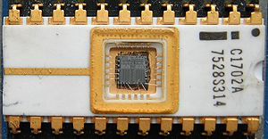
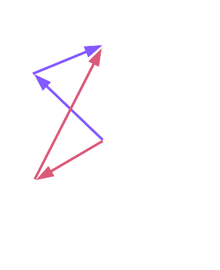
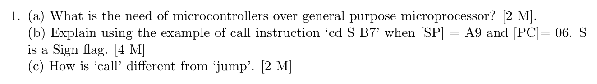
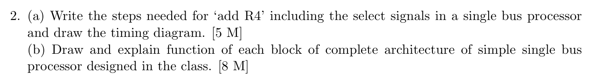
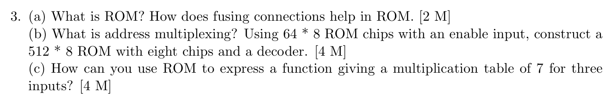
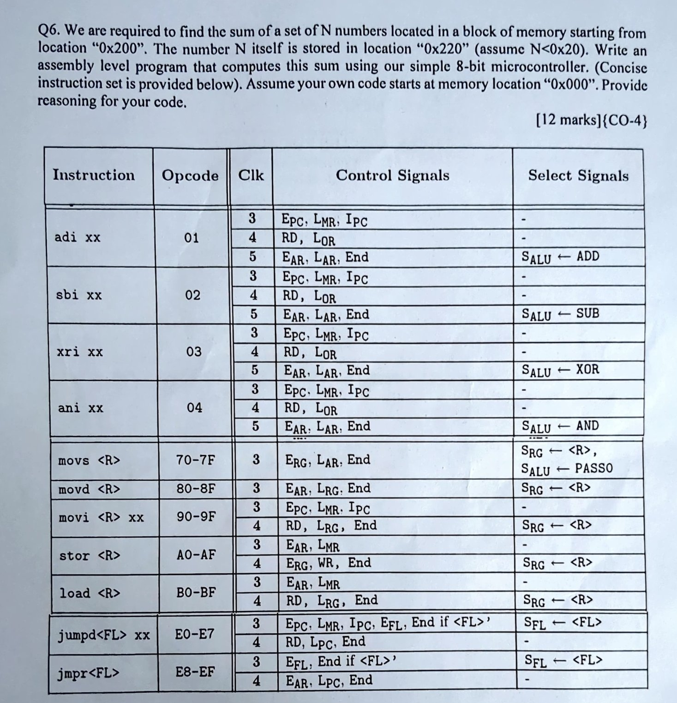
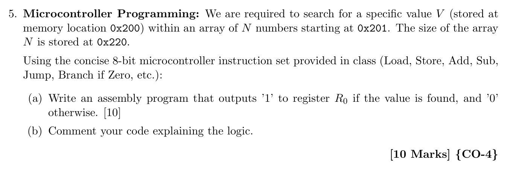
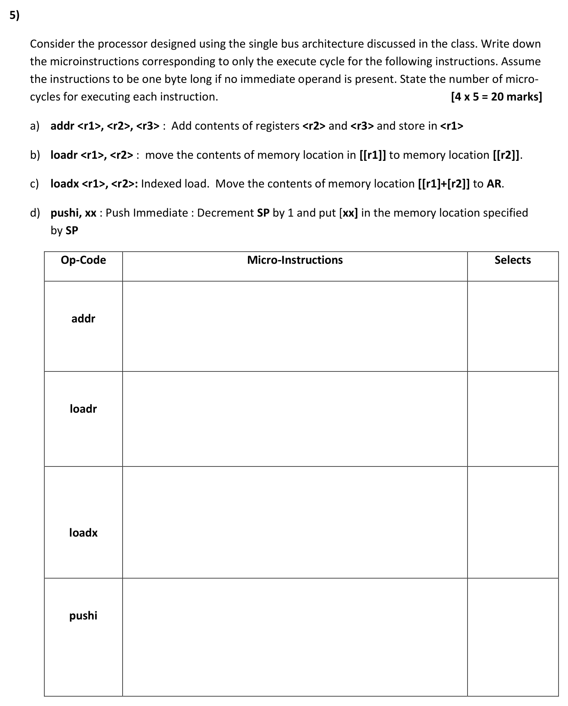
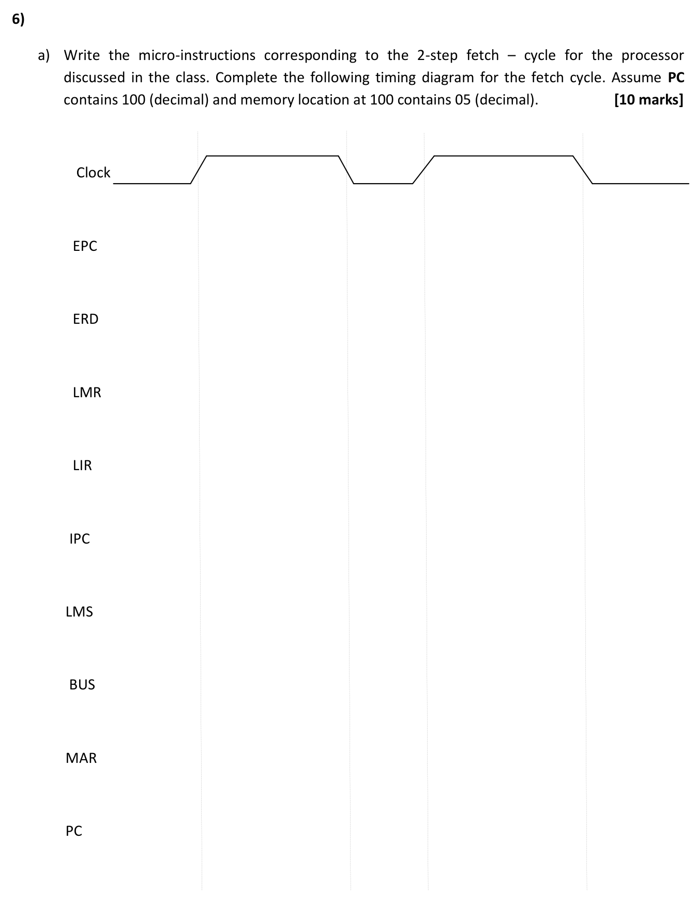

Section numbers follow the chapters of the PJN notes. Keys: ← → to move, C one clock and I one instruction on simulator slides, F fullscreen.
A processor is not magic. It is a few registers, an ALU and some memory sharing one set of wires, plus a table that says which switches to flip on each clock tick.
We build one, layer by layer:

What you already know from the course, seen through one device: a register with many control lines.
| Line | What it does | When |
|---|---|---|
| INn | value to load | must be stable before the falling edge |
| OUTn | tristate outputs, floating unless EN = 1 | driven after the rising edge |
| EN | puts the stored VAL on OUT | rising edge |
| LD | VAL ← IN | falling edge |
| RESET | VAL ← 0 (synchronous) | falling edge |
| INC / DEC | VAL ← VAL ± 1 | falling edge |
| SHL / SHR | shift, a 0 fills the gap | falling edge |
| ROL / ROR | rotate, the bit that falls off comes back | falling edge |
At most one of the eight actions per clock. EN may be on together with any one of them.
Consequence: inside one clock a register can be read (first half) and written (second half). Every one-clock data move later in the course relies on this.
Try: EN = 1 with INC. OUT shows the old value during the clock and VAL changes only at the falling edge. Then try ROL on B2 (bit 7 wraps to bit 0) against SHL (bit 7 is lost).
2k words of n bits. Each output bit is an arbitrary function of the k inputs, so one ROM = n independent combinational circuits of k variables.
Hold on to this. In Chapter 7 the control unit is exactly such a ROM: address = (instruction, clock step), word = control signals.
One set of shared wires. Every device listens; at most one talks.
Register A’s lines are named EA, LA, IA; B’s are EB, LB, IB, and so on.
Turn on just EA and LB for one clock:
B ← A.We write the clock as Ck i: EA, LB. The order inside the list means nothing; it is a set of signals that are high together.
B holds 10. One clock runs EB, LA, IB.
B is copied to A and incremented in the same clock. Does A get 10 or 11?
General rule: a register can be a bus source and have its own contents changed in the same clock. The processor uses this everywhere, e.g. EPC, LMR, IPC in every fetch.
Ck i: EOR, EA, LAR, SALU←ADD gives AR ← A + OR. Two enables, but OR does not touch the bus, so no conflict.
Ck 10: EA, LORCk 11: EB, EOR, LAR, SUBCk 12: EAR, LCCk 10: EC, LORCk 11: ED, EOR, LAR, ANDCk 12: EAR, LDEach clock here is a microcycle. Both sequences are presets in the bus lab.
The four registers become a register array R0 to R11 with one enable ERG, one load LRG and 4 select lines SRG.
Price: one register at a time, load and read only. The ALU now has 3 select lines (none, add, sub, and, or, xor, pass).
| Operation | Ck 0 | Ck 1 |
|---|---|---|
| ADD R1 | ERG, LOR, SRG←1 | EAR, LAR, SALU←ADD |
| XOR R11 | ERG, LOR, SRG←11 | EAR, LAR, SALU←XOR |
| LOAD R4 | ERG, LAR, SRG←4, SALU←PASS0 (one clock) | |
| STOR R9 | EAR, LRG, SRG←9 (one clock) | |
AR is always one source and always the destination: AR ← AR op R.
Early real processors worked this way. It keeps every instruction to one register argument, which is why one byte is enough to encode it.
LOAD R4 / STOR R9 mean register ↔ AR. From Ch 4 on those moves are called movs / movd, and load / stor mean memory ↔ register. Exams use the Ch 4 names.An 8-bit processor: 8-bit data, 8-bit instructions, 8-bit addresses (256 words of memory).
0x10. The only “language” the hardware understands.add r0.upper 4 bits: operation · lower 4 bits: register
| Assembly | Code | Action |
|---|---|---|
| add ⟨R⟩ | 10–1F | [AR] ← [AR] + [⟨R⟩] |
| sub ⟨R⟩ | 20–2F | [AR] ← [AR] − [⟨R⟩] |
| xor ⟨R⟩ | 30–3F | [AR] ← [AR] ⊕ [⟨R⟩] |
| and ⟨R⟩ | 40–4F | [AR] ← [AR] ∧ [⟨R⟩] |
| or ⟨R⟩ | 50–5F | [AR] ← [AR] ∨ [⟨R⟩] |
| cmp ⟨R⟩ | 60–6F | [AR] − [⟨R⟩], result discarded |
[R1] means “contents of R1”. cmp only sets the flags, which the conditional jumps of Ch 6 read.
| ADD R1 | 0x11 |
| XOR R8 | 0x38 |
| OR R11 | 0x5B |
| 0x27 | SUB R7 |
| 0x42 | AND R2 |
| 0x1D | invalid: no R13 |
| Assembly | Code | Action |
|---|---|---|
| adi xx | 01 | [AR] ← [AR] + xx |
| sbi xx | 02 | [AR] ← [AR] − xx |
| xri xx | 03 | [AR] ← [AR] ⊕ xx |
| ani xx | 04 | [AR] ← [AR] ∧ xx |
| ori xx | 05 | [AR] ← [AR] ∨ xx |
| cmi xx | 06 | [AR] − xx, flags only |
The constant is 8 bits, as wide as the opcode, so it cannot hide in the opcode. It sits in the next word. Typical use: set a loop counter, step a pointer.
Some papers write subi for sbi; same instruction.
adi 05 then add r1After fetching 01 from 20, PC already says 21: exactly where the operand is. Remember this for Ch 5.
| Assembly | Code | Action |
|---|---|---|
| movs ⟨R⟩ | 70–7F | [AR] ← [⟨R⟩] |
| movd ⟨R⟩ | 80–8F | [⟨R⟩] ← [AR] |
| movi ⟨R⟩ xx | 90–9F | [⟨R⟩] ← xx |
| stor ⟨R⟩ | A0–AF | [[AR]] ← [⟨R⟩] |
| load ⟨R⟩ | B0–BF | [⟨R⟩] ← [[AR]] |
Mnemonic: s = register is the source, d = register is the destination. Memory instructions always take their address from AR.
Inner brackets: contents of AR (0x40). Outer brackets: use it as an address. load r3 sets R3 = 9C.
One address word → at most 28 = 256 words of memory.
The program counter (PC) always holds the address of the next instruction. Fetch reads the word at PC and bumps PC; execute does the work. Forever, until stop.
So the PC needs three abilities: load, increment, reset to 0.
| Assembly | Code | Action |
|---|---|---|
| nop | 00 | nothing; still costs fetch + 1 clock |
| stop | 07 | stops fetching; only reset or power cycle recovers |
Every instruction becomes a list of clocks, each clock a set of control signals. That list is the instruction’s microprogram.
ERG, LOR, SRG←4.Identical for every instruction: 2 clocks before any execution starts.
xor, and, or: same as add with SALU changed.
cmp drops LAR but still needs Ck 4: the subtraction (and its flags) happen there.load/stor: Ck 3 copies the address AR → MAR; Ck 4 does the RD or WR.movi is a load whose address comes from PC, not AR. PC already points at the operand. IPC in Ck 3 moves PC past it, so the next fetch finds the next opcode.sbi, xri, ani, ori: as adi with their ALU select.
The only difference from add ⟨R⟩ is where OR gets its operand:
ERG, LOREPC, LMR, IPCRD, LORSo immediate ALU instructions take 3 execute clocks, 5 in total.
Conditional branches: when the flag test fails, the instruction ends at Ck 3. Total 3 clocks. jmpd still steps PC past its address word in that clock.
Example: a loop body of 15 clocks run 3 times, plus 3 clocks for the final not-taken jump, is 15 × 3 + 3 = 48 clocks.
Branching, subroutines, the stack, flags.
| MR (MAR) | holds the memory address |
| PC | next instruction address; inc, load, reset |
| SP | stack pointer; inc, dec, load |
| IR + decoder | current opcode → μROM start address |
| OR, ALU, AR | operand, arithmetic, accumulator |
| RG | R0–R11, select SRG |
| Flag register | Z C S P from the ALU; SFL picks one |
| MS | microprogram sequencer: the μPC |
| μROM | one control word per clock of every instruction |
The box around the edge is the control word: every E, L, I, D, RD, WR, select line, all driven by the ROM.
A jump changes PC, so execution continues somewhere else, with no memory of where it came from. It may be conditional on one flag: if false, it behaves as a nop.
| Assembly | Code | Action |
|---|---|---|
| jmpd⟨FL⟩ xx | E0–E7 | [PC] ← xx if ⟨FL⟩ |
| jmpr⟨FL⟩ | E8–EF | [PC] ← [AR] if ⟨FL⟩ |
d = direct (address in the next word), r = register (address in AR, e.g. a computed jump table).
| ⟨FL⟩ | low bits | true when |
|---|---|---|
| u | 0 | always |
| z | 1 | Z = 1 |
| nz | 2 | Z = 0 |
| c | 3 | C = 1 |
| nc | 4 | C = 0 |
| p | 5 | S = 0 (plus) |
| m | 6 | S = 1 (minus) |
| op | 7 | P = 1 (odd parity) |
So jmpdnz = E2, cdu = F0, retu = 08, cdm = F6.
jmpd that same clock already moved PC past the address word, so the program falls through correctly.Ck 3: MAR ← 06, PC ← 07
Ck 4: PC ← M[06] = 08
4 clocks, next fetch from 08
Ck 3: MAR ← 06, PC ← 07, End
3 clocks, next fetch from 07
| Flag | Set when | Updated by |
|---|---|---|
| Z | result is exactly 0 | all ALU ops |
| P | odd number of 1s | all ALU ops |
| C | carry out of / borrow into bit 7 | add, sub, cmp only |
| S | bit 7 of the result | add, sub, cmp only |
Data movement, jumps, calls, push and pop never change flags. So a movs or movd between a compare and its jump does not disturb the flag the jump tests.
Grouped together the flags form the PSW; some processors can move the PSW like data.

A call is a jump that remembers where to come back. Calls nest, and returns happen in reverse order: last saved, first used. That is a stack, like a pile of books.
| Assembly | Code | Action (only if ⟨FL⟩) |
|---|---|---|
| cd⟨FL⟩ xx | F0–F7 | SP ← SP−1, [[SP]] ← PC, PC ← xx |
| cr⟨FL⟩ | F8–FF | SP ← SP−1, [[SP]] ← PC, PC ← AR |
| ret⟨FL⟩ | 08–0F | PC ← [[SP]], SP ← SP+1 |
| push ⟨R⟩ | C0–CF | SP ← SP−1, [[SP]] ← ⟨R⟩ |
| pop ⟨R⟩ | D0–DF | ⟨R⟩ ← [[SP]], SP ← SP+1 |
cd Ck 3: PC → MAR and PC++. PC now holds the return address.cd/cr: 7 clocks, the longest. Clocks 3 and 4 of cr do not use the bus, yet cannot be merged: SP must finish decrementing before it is used.PJN’s remark: a special SP that decrements at the rising edge and increments at the falling edge would remove that clock.
Who turns all those signals on at the right clock? A ROM and a counter.
Pack them tightly and the ROM needs only 64 words: a 6-bit microaddress. The decoder maps the 8-bit opcode to the 6-bit start row of its microprogram.
The microprogram sequencer (MS) is just a register, the μPC, holding the ROM row to output this clock:
Fetch is rows 0–1, so “go fetch the next instruction” is simply “reset μPC to 0”.
Row numbers when Table 7.1 is packed in its printed order.
| Paper | Processor questions |
|---|---|
| Nov 2024 | Q1 a, b, c · Q2 a, b · Q3 (ROM) |
| Monsoon 2023 (re-posted as M25) | Q6 · official key exists |
| 2025 model paper (unofficial) | Q5 |
| Monsoon 2010 | Q5 · Q6 (a) · Q6 trace (Q6 b–d, Q7, Q8 left out: too long for this tutorial) |
| 2013, 2019, 2022, 2022 make-up | none (logic / sequential only) |
All endsems on cwdb for EC2.101, deduplicated. Every program below runs in the simulator.

Nov 2024 endsem, page 2 · click the paper to zoom · answers follow
A microcontroller is a whole microcomputer on one chip: CPU plus memory, I/O ports, timers and interrupts. A microprocessor is only the CPU and needs external chips for all of those.
Key: any 2 points, 1 mark each.
| jump (jmpd / jmpr) | call (cd / cr) | |
|---|---|---|
| Return address | not saved | PC pushed on the stack |
| Comes back? | no | yes, via ret |
| Touches SP / memory | no | SP − 1, one write |
| Clocks (taken) | 4 | 7 |
| Use | loops, if/else | subroutines |
“S” = sign flag, so the condition is m (minus): opcode F6, operand B7. Following the key, [PC] = 06 is the value of PC once the address word has been passed (the return address). Assume S = 1.
| Ck | Signals | Effect |
|---|---|---|
| 3 | EPC, LMR, IPC, EFL, End if m′ | S = 1 → keep going; PC → 06 |
| 4 | RD, LOR, DSP | OR ← B7, SP ← A8 |
| 5 | ESP, LMR | MAR ← A8 |
| 6 | EPC, WR | M[A8] ← 06 |
| 7 | EOR, LPC, End | PC ← B7 |
cd opcode itself, the return address becomes 08 (opcode at 06, operand at 07). State the assumption; the key accepts the flow either way.Marks: control signals / simulated values 2, sign flag discussion 1, final SP, [[SP]], PC 1.
The next slide runs it with the opcode at 04, so PC = 06 at Ck 6, matching the key.

Nov 2024 endsem, page 5 · click the paper to zoom · answers follow
| Ck | Signals | Select |
|---|---|---|
| 1 | EPC, LMR, IPC | – |
| 2 | RD, LIR, LMS | – |
| 3 | ERG, LOR | SRG ← 4 |
| 4 | EAR, LAR, End | SALU ← ADD |
Opcode 14. Ck 3: R4 → OR. Ck 4: AR on the bus into the ALU left input, OR on the right, sum loaded back to AR at the falling edge.
Key: Ck 3 1 mark, Ck 4 2 marks, timing 2 marks. Fetch is optional but makes the answer complete. Do not forget SRG.
Key: the complete architecture scores up to 8 (0.5 per block drawn + explanation); the enhanced single-bus figure caps at 6.

Nov 2024 endsem, page 10 · click the paper to zoom · answers follow
Non-volatile memory with fixed contents: k address lines select one of 2k words of n bits. In a PROM every row/column crossing has a fuse; blowing a fuse stores a 0 there, leaving it stores a 1. Fusing is how the truth table is written in, once.
3 inputs → 8 words; 7 × 7 = 49 → 6 output bits. An 8 × 6 ROM whose word at address x is 7x: 00, 07, 0E, 15, 1C, 23, 2A, 31 (hex). Live version on the ROM slide.
Address multiplexing: one set of address lines serves several chips (or several halves of an address on shared pins), with a decoder choosing which chip responds.
9 address bits for 512 words: low 6 go to all chips, top 3 pick the chip.
Monsoon 2023 endsem, page 2 (phone photo)
Click the paper to zoom · answers follow

| Register | Role |
|---|---|
| R0 | pointer into the array |
| R2 | count, from M[C0] |
| R3 | running sum (the answer) |
| R4 | current element |
movi r0, 0xA0 ; pointer = start of array
movi r1, 0xC0
movs r1
load r2 ; R2 = N
movi r3, 0 ; sum = 0
loop1: movs r0
load r4 ; R4 = M[pointer]
movs r3
add r4
movd r3 ; sum += element
movs r0
adi 1
movd r0 ; pointer++
movs r2
sbi 1
movd r2 ; N--
jmpdnz loop1 ; Z comes from sbi
stop
Edge cases worth a line in the answer: N = 0 would loop 256 times; the sum wraps modulo 256.

2025 model paper (unofficial), page 2 · click the paper to zoom · answers follow
Same 8-bit address issue, so map 0x200 → A0, 0x201 → A1, 0x220 → C0. Plan: walk the array, compare each element with V using cmp; Z = 1 means equal.
Rubric: initialisation 2, fetch loop with pointer increment 3, comparison 3, branch on zero / counter 2.
movi r1, 0xA0
movs r1
load r2 ; R2 = V
movi r1, 0xC0
movs r1
load r3 ; R3 = N
movi r1, 0xA1 ; pointer to a[0]
movi r0, 0 ; assume not found
LOOP: movs r1
load r4 ; R4 = a[i]
movs r4
cmp r2 ; a[i] − V, flags only
jmpdz FOUND
movs r1
adi 1
movd r1 ; pointer++
movs r3
sbi 1
movd r3 ; N--
jmpdnz LOOP
stop ; R0 stays 0
FOUND: movi r0, 1
stop
addr r1, r2, r3: r1 ← r2 + r3loadr r1, r2: M[r2] ← M[r1]loadx r1, r2: AR ← M[r1 + r2]pushi xx: SP − 1, then M[SP] ← xxMonsoon 2010 endsem, page 8
Click the paper to zoom · answers follow

| Instruction | Execute microinstructions | Exec ck |
|---|---|---|
addr r1, r2, r3r1 ← r2 + r3 | Ck 3: ERG, LOR, SRG←r3 Ck 4: ERG, LAR, SRG←r2, SALU←ADD Ck 5: EAR, LRG, SRG←r1, End | 3 (5 total) |
loadr r1, r2M[[r2]] ← M[[r1]] | Ck 3: ERG, LMR, SRG←r1 Ck 4: RD, LOR Ck 5: ERG, LMR, SRG←r2 Ck 6: EOR, WR, End | 4 (6) |
loadx r1, r2AR ← M[[r1] + [r2]] | Ck 3: ERG, LOR, SRG←r2 Ck 4: ERG, LAR, SRG←r1, SALU←ADD Ck 5: EAR, LMR Ck 6: RD, LAR, SALU←PASS0, End | 4 (6) |
pushi xxSP ← SP − 1, M[SP] ← xx | Ck 3: EPC, LMR, IPC Ck 4: RD, LOR, DSP Ck 5: ESP, LMR Ck 6: EOR, WR, End | 4 (6) |
Points to mention: the ALU only writes AR, so addr and loadx overwrite AR and set flags; three register fields do not fit one byte, so assume the decoder supplies each SRG value. loadr and pushi use OR as a buffer that can drive the bus, just like cd Ck 7. pushi folds the decrement into Ck 4, unlike push.
Monsoon 2010 endsem, page 9
Click the paper to zoom · answers follow

Ck 1 EPC, LMR, IPC: bus = 100 after the rising edge. Falling edge: MAR = 100, PC = 101.
Ck 2 RD, LIR, LMS: memory drives 05 onto the bus. Falling edge: IR = 05, μPC = start row of opcode 05 (ori).
The paper calls the read line ERD. The bus is high-impedance between drivers; draw it dashed, as here.
Numbers are decimal: cdu 11 lands exactly on add r1.
| # | Instruction | Changed values |
|---|---|---|
| 1 | movi r1, 22 | R1 = 22, PC = 2 |
| 2 | movs r1 | AR = 22, PC = 3 |
| 3 | adi 42 | AR = 64, P = 1 (one 1-bit), PC = 5 |
| 4 | push r1 | SP = 254, M[254] = 22, PC = 6 |
| 5 | cdu 11 | SP = 253, M[253] = 8, PC = 11 |
| 6 | add r1 | AR = 86, P = 0, PC = 12 |
| 7 | movd r3 | R3 = 86, PC = 13 |
| 8 | retu | PC = M[253] = 8, SP = 254 |
| 9 | pop r2 | R2 = M[254] = 22, SP = 255, PC = 9 |
| 10 | movs r2 | AR = 22, PC = 10 |
| 11 | stop | processor halts (PC = 11) |
Internal MAR/OR/IR also change every step; the simulator shows them. M[253], M[254] keep their old contents after ret and pop: popping does not erase.
EPC, LMR, IPCRD, LIR, LMSExam habits: write SRG/SALU/SFL next to the signals, label clocks from Ck 3, count clocks of executed instructions, and state any assumption (8-bit addresses, decimal vs hex) in one line.